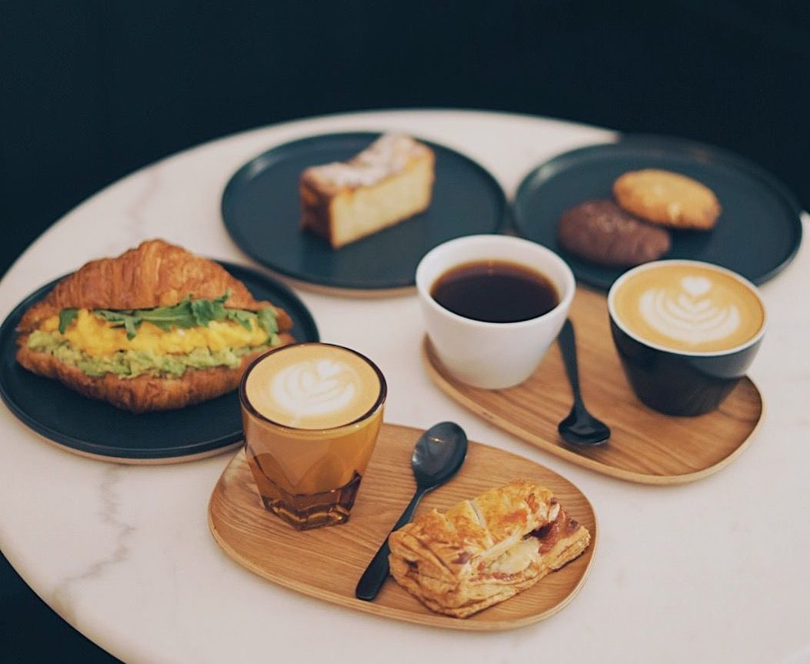

Últimas Publicaciones
La mejor forma de empezar el día
Publicado el:
Empezar el día con un desayuno saludable es fundamental para tener energía durante toda la jornada...
Consejos para una vida saludable
Publicado el:
Vivir de manera saludable no solo se trata de comer bien, sino también de mantener una mente positiva...